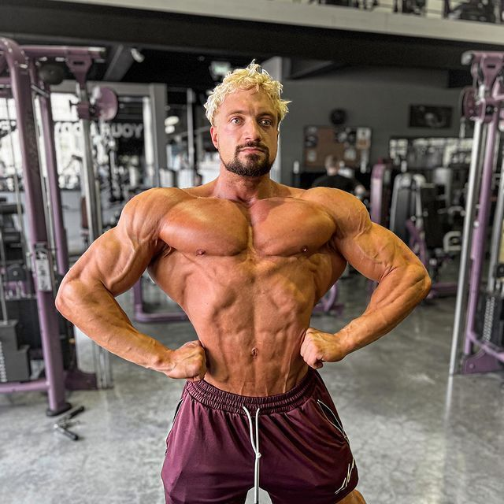

Introdução
Johannes (Jo) Lindner, mais conhecido como Joesthetics, foi um fisiculturista e influenciador alemão. Ele se destacou nas redes sociais e no mundo do fitness, acumulando milhões de seguidores e inspirando muitas pessoas com sua dedicação ao fisiculturismo. Sua paixão pela musculação começou na adolescência, e ele se mudou para a Tailândia aos 20 anos, onde começou a fazer vídeos mostrando sua rotina fitness.
Carreira
Começou sua carreira no fisiculturismo em 2014. Ele venceu o Campeonato Nacional Alemão em 2014 e o Campeonato Europeu em 2015 na categoria "Men's Physique". Em 2022, retornou às competições e foi vice-campeão no "Thailand Pro Qualifier". Ele também lançou um aplicativo de treino chamado "Alien Gains" em 2021. Apesar de participar de várias competições, Jo não conseguiu chegar ao Mr. Olympia, a principal competição de fisiculturismo do mundo.
Principais Conquistas e Realizações
| Conquistas | Ano |
|---|---|
| Campeonato Nacional Alemão | 2014 |
| Campeonato Europeu | 2015 |
| Vice-Campeão no Thailand Pro Qualifier | 2022 |
Vida Pessoal
Jo Lindner morou em Dubai e depois se mudou para a Tailândia com sua namorada Nicha. Ele sofria de uma doença muscular rara chamada doença muscular ondulante (RMD). Dias antes de falecer, Jo se queixou de dores no pescoço, mas não procurou um médico. Em 30 de junho de 2023, ele faleceu devido a um aneurisma. Sua morte gerou grande comoção entre seus seguidores e colegas influenciadores.
Influência e Legado
Jo era conhecido por seus músculos peitorais listrados, apelidados de "ganhos alienígenas". Ele inspirava seus seguidores com postagens motivacionais e era conhecido por responder pessoalmente aos comentários de seus fãs. Mesmo enfrentando desafios, ele se dedicava a motivar seus seguidores diariamente. Sua influência no mundo do fitness permanece significativa, com muitos fãs lembrando dele como uma constante fonte de inspiração.